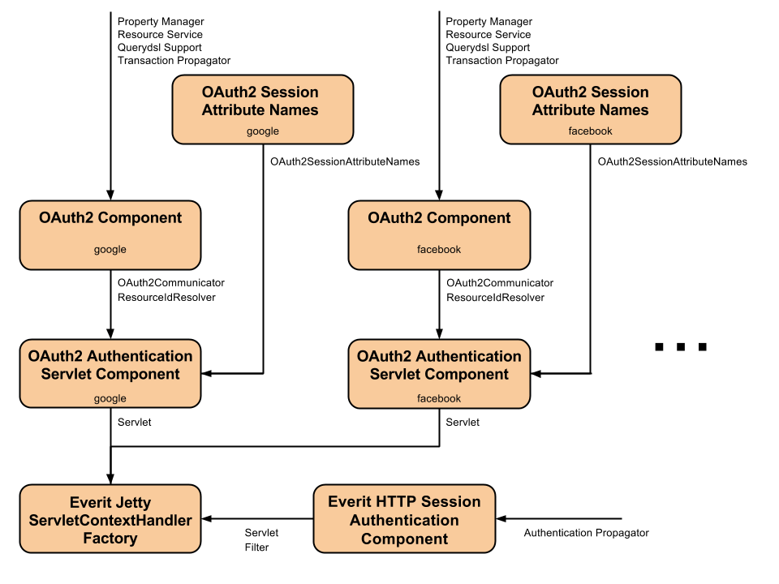

Authentication OAuth2 RI ECM
Authentication OAuth2 RI ECM
The authentication-oauth2 is an OAuth 2.0 client and an authentication solution based on EverIT Authentication.
The project is separated to three Git repositories to support different implementations and easier usage:
The sample application is a pre-configured OSGi application based on EverIT solutions. The
sample application must be registered in Google
Dev Console and/or Facebook
App Registration to acquire the
client id
and
client secret
. During the client application registration the following redirect URLs must be set in
case of:
https://localhost:8443/sign-in-with-google/processRequestTokenhttps://localhost:8443/sign-in-with-facebook/processRequestToken
To build and run the sample application the following commands must be executed on
authentication-oauth2-ri-ecm
:
cd sample mvn clean eosgi:dist cd target/eosgi-dist/oauth2-sample-app/bin runConsole.bat (or ./runConsole.sh)
Some configurtaion must be changed on the OSGi Web Console (
https://localhost:4848/system/console/configMgr
) after the successful client registrations and the application start. The
client id
and
client secret
must be configured in the Everit OAuth2 Component (
org.everit.authentication.oauth2.ri.ecm.OAuth2
) components:
MY_GOOGLE_CLIENT_ID and MY_GOOGLE_CLIENT_SECRET
values with the client id and client secret obtained from
Google on the OAuth2 Component configuration belonging to the google provider: https://localhost:4848/system/console/configMgr/org.everit.authentication.oauth2.ri.ecm.OAuth2.1cf48e83-2ac5-4948-a5da-233337f5a43aMY_FACEBOOK_CLIENT_ID and MY_FACEBOOK_CLIENT_SECRET
values with client id and client secret obtained from Facebook
on the OAuth2 Component configuration belonging to the facebook provider: https://localhost:4848/system/console/configMgr/org.everit.authentication.oauth2.ri.ecm.OAuth2.eac0369c-3316-46e8-aae1-9da677844ebb
After the successful configuration the sample application can be accessed on
https://localhost:8443/index.
Continue reading for more information about detailed configuration and setup.
The following OSGi components can be configured via config admin on web console:
https://localhost:4848/system/console/configMgr
Responsible for OAuth2 communication and resource id handling. Registers an
org.everit.authentication.oauth2.OAuth2Communicator
and an
org.everit.resource.resolver.ResourceIdResolver
OSGi Services.
service.description)oauth2.provider.name).oauth2.client.id)oauth2.client.secret)oauth2.scope)oauth2.authorization.endpoint)oauth2.token.endpoint)oauth2.user.information.request.url)org.everit.props.PropertyManager.
(propertyManager.target)org.everit.resource.ResourceService.
(resourceService.target)org.everit.querydsl.support.QuerydslSupport.
(querydslSupport.target)org.everit.transaction.propagator.TransactionPropagator.
(transactionPropagator.target)
Session attribute names stored in and read from the
javax.servlet.http.HttpSession
during the authentication process. These attribute names can be used to access the stored
information (access token, etc.) to be able to communicate with the OAuth2 server.
Registers an
org.everit.authentication.oauth2.ri.OAuth2SessionAttributeNames
OSGi Service.
service.description)oauth2.session.attr.name.provider.name)oauth2.session.attr.name.access.token)oauth2.session.attr.name.access.token.type)oauth2.session.attr.name.refresh.token)oauth2.session.attr.name.scope)
Implements OAuth2-based authentication mechanism as a Servlet. Registers a
javax.servlet.Servlet
OSGi Service.
service.description)oauth2.provider.name).oauth2.authentication.success.url)oauth2.authentication.failed.url)oauth2.process.request.token.path.info)org.everit.authentication.oauth2.ri.OAuth2SessionAttributeNames.
(oauth2SessionAttributeNames.target)org.everit.authentication.oauth2.OAuth2Communicator.
(oauth2Communicator.target)authenticationSessionAttributeNames.target)org.everit.resource.resolver.ResourceIdResolver.
(resourceIdResolver.target)The Servlets and Filters used for OAuth2 authentication can be configured in Everit Jetty ServletContextHandler Factory (provided by the jetty-server-ecm). This documentation explains the configuration of the sample application but it can be applied in any other application easily.
The configuration of the Jetty ServletContextHandler Factory can be accessed on:
https://localhost:4848/system/console/configMgr/org.everit.jetty.server.ecm.ServletContextHandlerFactory.79b84f6b-83a2-4971-98ba-61b5eeb5398f
Servlet and Filter clauses are used to register the Servlets and Filters to the Servlet Context. These clauses are built from three part:
url-pattern attribute describes where Servlet or Filter listens
on;
filter directive is used to determine which javax.servlet.Servlet
or javax.servlet.Filter OSGi service should be registered to the Servlet
Context to handle the request on the specified url-pattern.
The following Servlets (clause) configurations are used in the sample application.
This configuration serves the content of the
index.html
page with the
IndexServletComponent
. This is the login page where the "Sign in with Google" and "Sign in with Facebook"
buttons are.
index;url-pattern=/index;filter:=(objectClass=org.everit.authentication.oauth2.ri.ecm.sample.IndexServletComponent)
This configuration serves the content of the
welcome.html
page with the
WelcomeServletComponent
. The user is redirected to this page if the authentication is successful. The welcome
page (the Servlet) checks if the user is authenticated, queries the name of the user from
the OAuth2 server and renders these information.
welcome;url-pattern=/welcome;filter:=(objectClass=org.everit.authentication.oauth2.ri.ecm.sample.WelcomeServletComponent)
This configuration serves the content of the
failed.html
page with the
FailedServletComponent
. This is the page where the user is redirected if the authentication is failed.
failed;url-pattern=/failed;filter:=(objectClass=org.everit.authentication.oauth2.ri.ecm.sample.FailedServletComponent)
The
OAuth2AuthenticationServlet
is responsible for the communication between:
sign-in-with-...
requests of the user and redirects the user to the OAuth2 server. It also acquires the
access token when the user grants the application that can be used later to access the
OAuth2 server in the name of the user.
This configuration is responsible for OAuth2 Google Authentication.
sign-in-with-google;url-pattern=/sign-in-with-google/*;filter:=(oauth2.provider.name=google)
This configuration is responsible for OAuth2 Facebook Authentication.
sign-in-with-facebook;url-pattern=/sign-in-with-facebook/*;filter:=(oauth2.provider.name=facebook)
The redirect URL used in client registration and sent to the OAuth2 server is constructed from the configuration of the application:
[PROTOCOL]://[HOST]:[PORT]/[SERVLET_URL_PATTERN]/[REQUEST_TOKEN_PATH_INFO]
For example in the sample application we configured the Jetty to use
https
protocol, on
localhost:8443
. The OAuth2 servlets are configured in the Servlet Context to listen on
/sign-in-with-google/*
and
/sign-in-with-facebook/*
. In the configuration of the OAuth2 Authentication Servlets we use the
/processRequestToken
request token path info. This is how the redirect URL is built. In case of google and
facebook providers, we have the following URLs:
https://localhost:8443/sign-in-with-google/processRequestTokenhttps://localhost:8443/sign-in-with-facebook/processRequestTokenThis configuration handles the logout requests, when the user clicks on the logout button. It only invalidates the session of the user, it DOES NOT logs out the user on the OAuth2 server.
logout;url-pattern=/logout;filter:=(service.pid=org.everit.authentication.http.session.SessionAuthentication.1101452a-0f73-4789-bd35-48a47e586e2f)
This filter is applied on all (/*) requests received by the Jetty Connector. It determines
if there is an authenticated resource Id (that were added by the
OAuth2AuthenticationServlet
) is assigned to the current session and executes the authenticated action (
chain.doFilter(request, response);
) in the name of it. Using this filter the
AuthenticationContext.getCurrentResourceId()
will return the resource Id assigned to the logged in user later on the stack.
session-filter;url-pattern=/*;filter:=(service.pid=org.everit.authentication.http.session.SessionAuthentication.1101452a-0f73-4789-bd35-48a47e586e2f)
The following diagram demonstrates the component configuration where the boxes represent the configured OSGi components and the arrows represent the registered OSGi services.
This solution matches the Everit Authentication Concept:
The OAuth2 components solves the following issues:
OAuth2AuthenticationServlet manages the authentication process:
OAuth2SessionAttributeNamesOAuth2OltuCommunicatorImpl communicates with the OAuth2 server
OAuth2ResourceIdResolverImpl maps the user Id to a resource Id